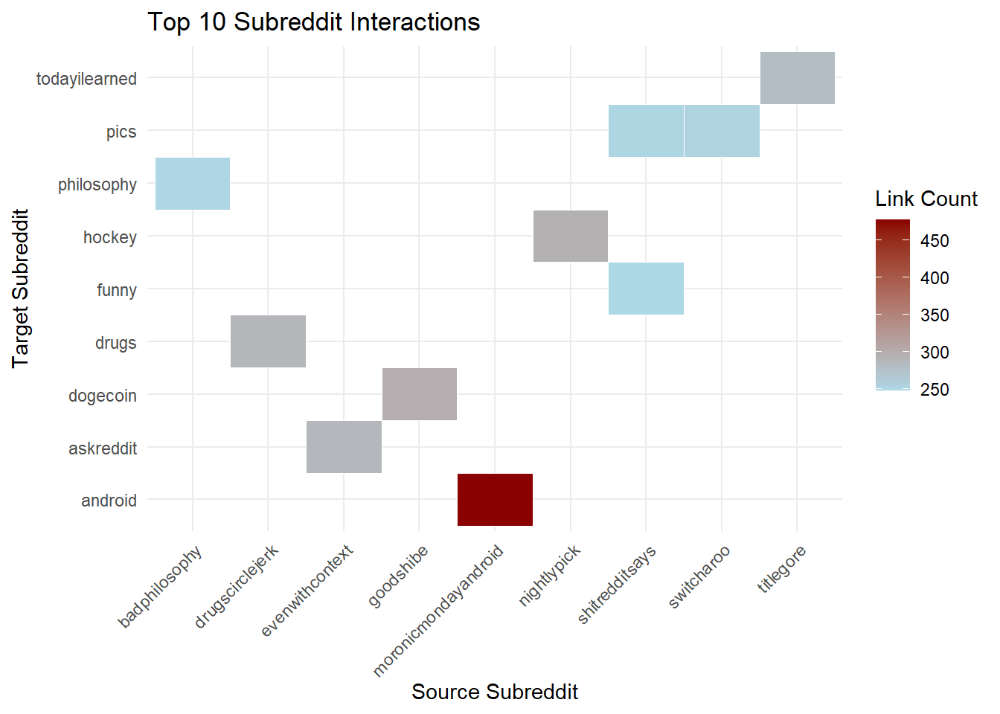
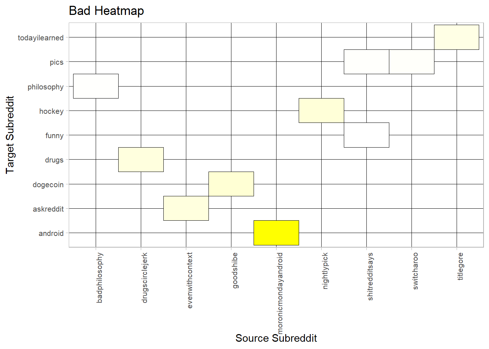
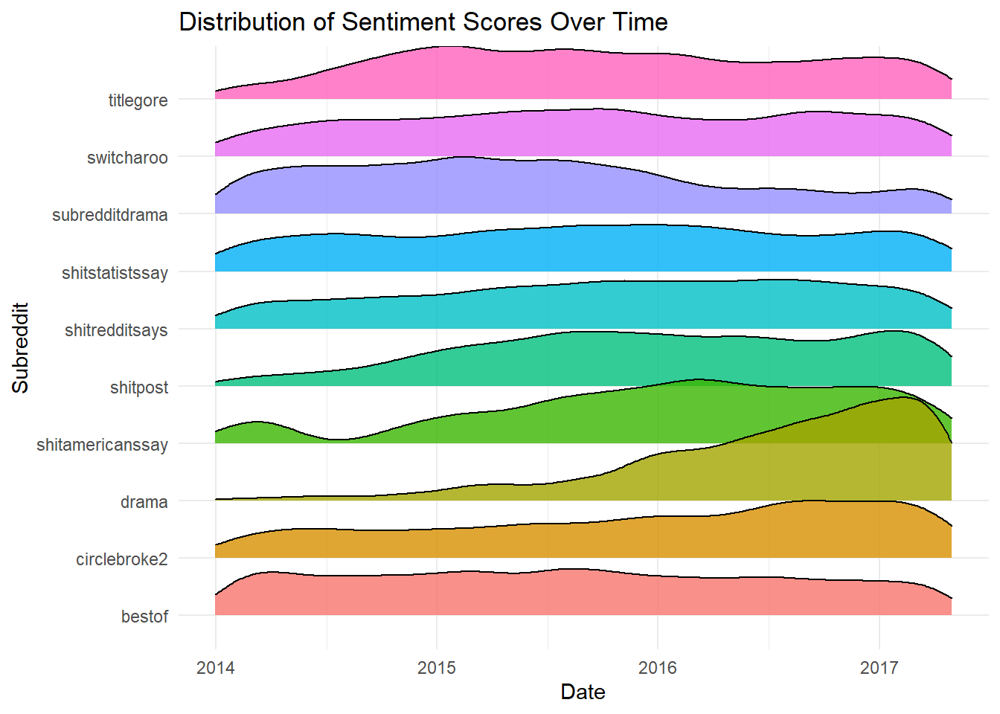
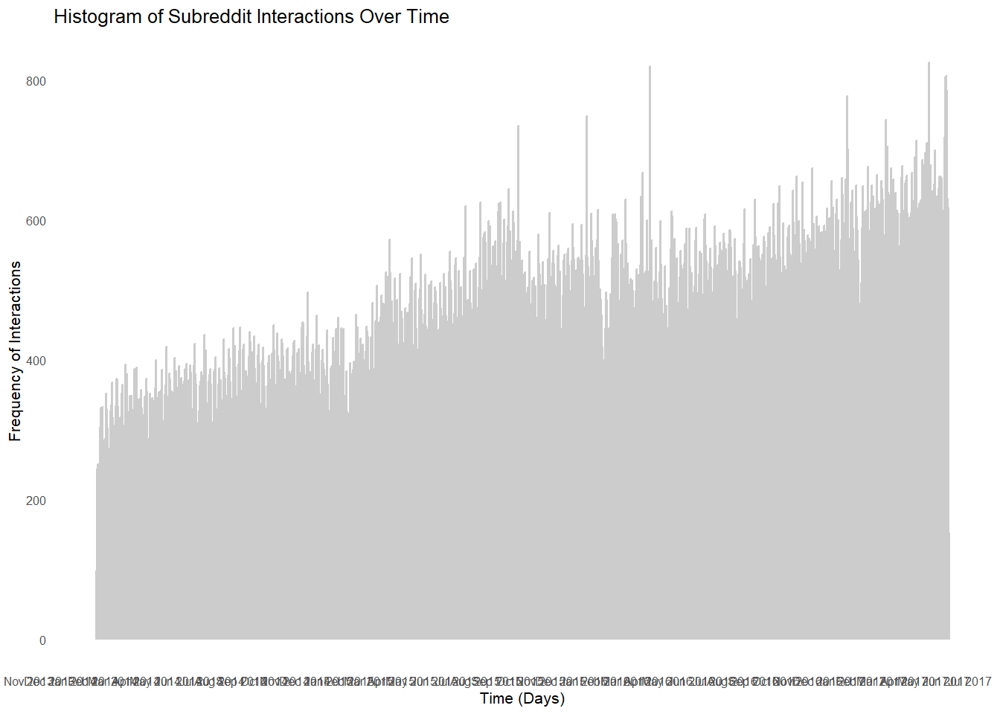
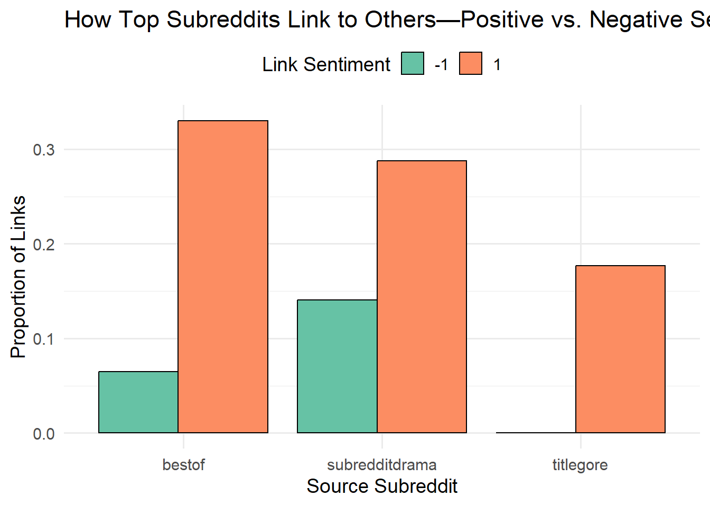
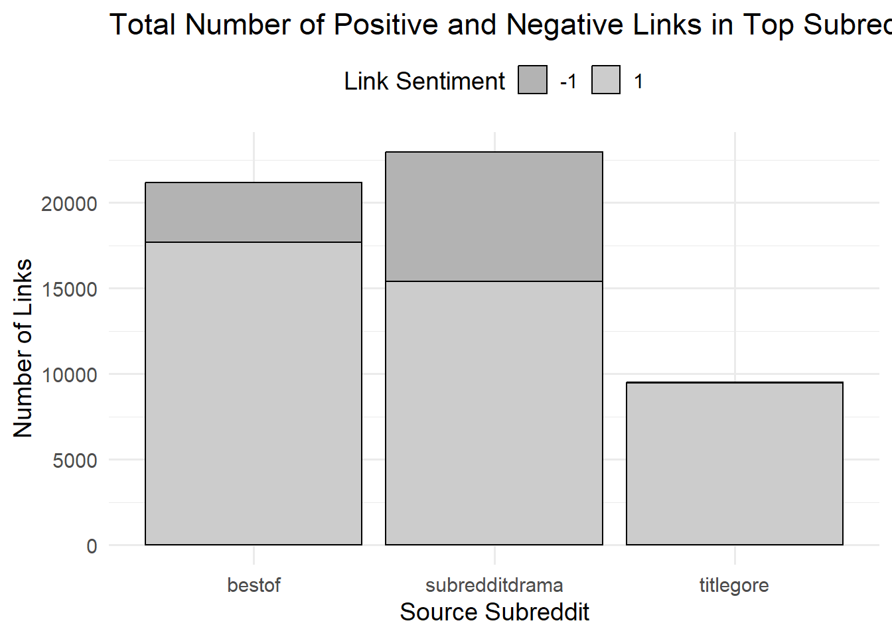
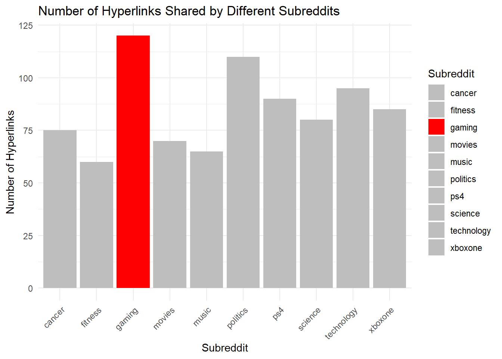
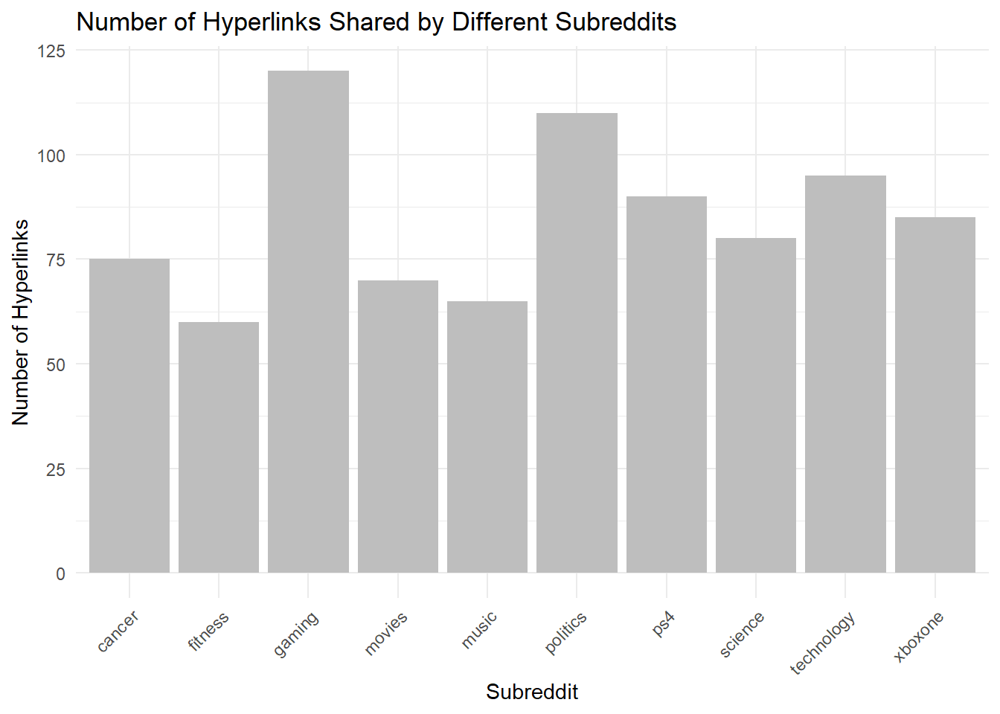

In this assignment, I explore how different ways of visualizing data can impact how we understand it. Using the Reddit Hyperlink Network dataset from my previous assignment, I create a series of visualizations to show visualization principles, including expressiveness, effectiveness, discriminability, separability, and popout.
The goal is to show how good design choices make data clearer and easier to interpret, while bad choices can make it confusing or misleading. So, when comparing well designed and poorly designed versions of the same data, I learn what works and what doesn’t in data visualization.
library(ggplot2)library(dplyr)heatmap_data <- reddit_data %>%count(SOURCE_SUBREDDIT, TARGET_SUBREDDIT, name ="weight") %>%top_n(10, wt = weight) %>%arrange(desc(weight)) # ordering from highest to lowest weight# heatmapggplot(heatmap_data, aes(x = SOURCE_SUBREDDIT, y = TARGET_SUBREDDIT, fill = weight)) +geom_tile(color ="white") +scale_fill_gradient(low ="lightblue", high ="darkred") +theme_minimal() +theme(axis.text.x =element_text(angle =45, hjust =1)) +labs(title ="Top 10 Subreddit Interactions", x ="Source Subreddit", y ="Target Subreddit", fill ="Link Count")

I’m making a heatmap to show how subreddits are connected because it helps us easily see their relationships and spot patterns using colors and organization.
Figure 2:
Code
bad_heatmap_data <- reddit_data %>%count(SOURCE_SUBREDDIT, TARGET_SUBREDDIT, name ="weight") %>%top_n(10, wt = weight) # no orderingggplot(bad_heatmap_data, aes(x = SOURCE_SUBREDDIT, y = TARGET_SUBREDDIT, fill = weight)) +geom_tile(color ="black") +scale_fill_gradient(low ="white", high ="yellow") +theme_light() +theme(axis.text.x =element_text(angle =90, size =8, hjust =1),axis.text.y =element_text(size =8),panel.grid.major =element_line(color ="black"), legend.position ="none" ) +labs(title ="Bad Heatmap", x ="Source Subreddit", y ="Target Subreddit", fill ="Link Count" )

Here the color scheme white to yellow makes it hard to differentiate values, and the thick black gridlines adding clutter. There is no legend to explain the color scale, which makes interpretation hard.
Discriminability
Figure 3:
Code
library(ggridges)# Select top subreddits with the most linkstop_subreddits <- reddit_data %>%count(SOURCE_SUBREDDIT, sort =TRUE) %>%top_n(10, n) %>%pull(SOURCE_SUBREDDIT)reddit_filtered <- reddit_data %>%filter(SOURCE_SUBREDDIT %in% top_subreddits)# Convert timestamp to datereddit_filtered$DATE <-as.Date(reddit_filtered$TIMESTAMP)ggplot(reddit_filtered, aes(x = DATE, y = SOURCE_SUBREDDIT, height = ..density.., fill = SOURCE_SUBREDDIT)) +geom_density_ridges(stat ="density", alpha =0.8) +theme_minimal() +labs(title ="Distribution of Sentiment Scores Over Time",x ="Date",y ="Subreddit",fill ="Subreddit") +theme(legend.position ="none")

This is a joy plot to show how sentiment scores are distributed over time for different subreddits. The subreddit’s sentiment trends are visually distinct and we have clear vertical separation with the temporal patterns easy to spot (e.g., spikes in sentiment changes).
Figure 4:
Code
library(lubridate)reddit_data <- reddit_data %>%mutate(TIMESTAMP =as_datetime(TIMESTAMP))ggplot(reddit_data, aes(x = TIMESTAMP)) +geom_histogram(binwidth =1*24*60*60, fill ="gray80", color ="gray80", alpha =0.5) +theme_minimal(base_size =8) +labs(title ="Histogram of Subreddit Interactions Over Time",x ="Time (Days)",y ="Frequency of Interactions" ) +scale_x_datetime(date_labels ="%b %Y", date_breaks ="1 month") +theme(axis.text.x =element_text(angle =0, hjust =1, size =6),axis.text.y =element_text(size =6),panel.grid.major =element_blank(),panel.grid.minor =element_blank() )

This is a histohram to visualize frequency of subreddit interactions over days (a bin for each day), with the x axis labels overlapping, and a poor color contrast. We also have no clear bar separation. I think I managed to make this figure fail at discriminability!
Separability
Figure 5:
Code
# popular subreddits (top 3 by frequency)popular_sources <- reddit_data %>%count(SOURCE_SUBREDDIT, sort =TRUE) %>%slice(1:3) %>%pull(SOURCE_SUBREDDIT)data_good <- reddit_data %>%filter(SOURCE_SUBREDDIT %in% popular_sources)# Summarize the counts of +1 vs. -1 for each subredditdata_good_summary <- data_good %>%group_by(SOURCE_SUBREDDIT, LINK_SENTIMENT) %>%summarise(count =n(), .groups ="drop") %>%mutate(prop = count /sum(count))ggplot(data_good_summary, aes(x = SOURCE_SUBREDDIT, y = prop, fill =factor(LINK_SENTIMENT))) +geom_bar(stat ="identity", position =position_dodge(width =0.8), color ="black") +scale_fill_brewer(palette ="Set2", name ="Link Sentiment") +theme_minimal(base_size =14) +labs(title ="How Top Subreddits Link to Others—Positive vs. Negative Sentiment",x ="Source Subreddit",y ="Proportion of Links") +theme(legend.position ="top")

The full dataset has tens of thousands of subreddits, but I just focusd here on the top three subreddits by frequency of hyperlinks This figure tracks how subreddits link to each other. Each link has a sentiment: +1 for positive or neutral, -1 for negative. The data spans 2.5 years revealing how subreddits reference, support, or criticize each other.
The positive bar is taller than its negative bar meaning that this community typically links out with positive/neutral sentiment towards other subreddits.
Figure 6:
Code
data_bad_summary <- data_good_summaryggplot(data_bad_summary, aes(x = SOURCE_SUBREDDIT, y = count, fill =factor(LINK_SENTIMENT))) +geom_bar(stat ="identity", position ="stack", color ="black") +scale_fill_manual(values =c("gray70", "gray80"), name ="Link Sentiment") +theme_minimal(base_size =14) +labs(title ="Total Number of Positive and Negative Links in Top Subreddits",x ="Source Subreddit",y ="Number of Links" ) +theme(legend.position ="top")

Stacked bar chart of negative vs. positive links for three subreddits, shown in nearly identical shades of gray. This makes it difficult to distinguish the two sentiment categories.
Popout
Figure 7:
Code
subreddit_data <-data.frame(Subreddit =c("gaming", "xboxone", "ps4", "fitness", "cancer", "politics", "technology", "science", "movies", "music"),Hyperlinks =c(120, 85, 90, 60, 75, 110, 95, 80, 70, 65))ggplot(subreddit_data, aes(x = Subreddit, y = Hyperlinks, fill = Subreddit)) +geom_bar(stat ="identity") +scale_fill_manual(values =ifelse(subreddit_data$Subreddit =="ps4", "red", "gray")) +labs(title ="Number of Hyperlinks Shared by Different Subreddits", x ="Subreddit", y ="Number of Hyperlinks") +theme_minimal() +theme(axis.text.x =element_text(angle =45, hjust =1))

Here we have a bar chart showing the number of hyperlinks from different source subreddits, where gaming subreddit is popping out in red to draw attention to its high hyperlink count compared to others.
Figure 8:
Code
ggplot(subreddit_data, aes(x = Subreddit, y = Hyperlinks)) +geom_bar(stat ="identity", fill ="gray") +labs(title ="Number of Hyperlinks Shared by Different Subreddits", x ="Subreddit", y ="Number of Hyperlinks") +theme_minimal() +theme(axis.text.x =element_text(angle =45, hjust =1))

Here we have the same bar chart, but with all bars in the same color, causing them to blend together and making it hard to distinguish any popping elements I want to identify.
Source Code
---title: "Subreddit Wars"subtitle: "Assignment 4: Marks and Channels"format: html: toc: true toc-depth: 2 html-math-method: katex code-copy: true code-fold: true code-tools: trueexecute: warning: false message: false error: false---In this assignment, I explore how different ways of visualizing data can impact how we understand it. Using the **Reddit Hyperlink Network dataset** from my previous assignment, I create a series of visualizations to show visualization principles, including **expressiveness, effectiveness, discriminability, separability, and popout**.The goal is to show how good design choices make data clearer and easier to interpret, while bad choices can make it confusing or misleading. So, when comparing well designed and poorly designed versions of the same data, I learn what works and what doesn’t in data visualization.```{r}library(readr)file_path <-"C:/Github repos/soc-redditHyperlinks-title.tsv"reddit_data <-read_tsv(file_path)```# Expressiveness and Effectiveness## Figure 1:```{r}library(ggplot2)library(dplyr)heatmap_data <- reddit_data %>%count(SOURCE_SUBREDDIT, TARGET_SUBREDDIT, name ="weight") %>%top_n(10, wt = weight) %>%arrange(desc(weight)) # ordering from highest to lowest weight# heatmapggplot(heatmap_data, aes(x = SOURCE_SUBREDDIT, y = TARGET_SUBREDDIT, fill = weight)) +geom_tile(color ="white") +scale_fill_gradient(low ="lightblue", high ="darkred") +theme_minimal() +theme(axis.text.x =element_text(angle =45, hjust =1)) +labs(title ="Top 10 Subreddit Interactions", x ="Source Subreddit", y ="Target Subreddit", fill ="Link Count")```I’m making a heatmap to show how subreddits are connected because it helps us easily see their relationships and spot patterns using colors and organization.## Figure 2:```{r}bad_heatmap_data <- reddit_data %>%count(SOURCE_SUBREDDIT, TARGET_SUBREDDIT, name ="weight") %>%top_n(10, wt = weight) # no orderingggplot(bad_heatmap_data, aes(x = SOURCE_SUBREDDIT, y = TARGET_SUBREDDIT, fill = weight)) +geom_tile(color ="black") +scale_fill_gradient(low ="white", high ="yellow") +theme_light() +theme(axis.text.x =element_text(angle =90, size =8, hjust =1),axis.text.y =element_text(size =8),panel.grid.major =element_line(color ="black"), legend.position ="none" ) +labs(title ="Bad Heatmap", x ="Source Subreddit", y ="Target Subreddit", fill ="Link Count" )```Here the color scheme white to yellow makes it hard to differentiate values, and the thick black gridlines adding clutter. There is no legend to explain the color scale, which makes interpretation hard.# Discriminability## Figure 3:```{r}library(ggridges)# Select top subreddits with the most linkstop_subreddits <- reddit_data %>%count(SOURCE_SUBREDDIT, sort =TRUE) %>%top_n(10, n) %>%pull(SOURCE_SUBREDDIT)reddit_filtered <- reddit_data %>%filter(SOURCE_SUBREDDIT %in% top_subreddits)# Convert timestamp to datereddit_filtered$DATE <-as.Date(reddit_filtered$TIMESTAMP)ggplot(reddit_filtered, aes(x = DATE, y = SOURCE_SUBREDDIT, height = ..density.., fill = SOURCE_SUBREDDIT)) +geom_density_ridges(stat ="density", alpha =0.8) +theme_minimal() +labs(title ="Distribution of Sentiment Scores Over Time",x ="Date",y ="Subreddit",fill ="Subreddit") +theme(legend.position ="none")```This is a joy plot to show how sentiment scores are distributed over time for different subreddits. The subreddit’s sentiment trends are visually distinct and we have clear vertical separation with the temporal patterns easy to spot (e.g., spikes in sentiment changes).## Figure 4:```{r}library(lubridate)reddit_data <- reddit_data %>%mutate(TIMESTAMP =as_datetime(TIMESTAMP))ggplot(reddit_data, aes(x = TIMESTAMP)) +geom_histogram(binwidth =1*24*60*60, fill ="gray80", color ="gray80", alpha =0.5) +theme_minimal(base_size =8) +labs(title ="Histogram of Subreddit Interactions Over Time",x ="Time (Days)",y ="Frequency of Interactions" ) +scale_x_datetime(date_labels ="%b %Y", date_breaks ="1 month") +theme(axis.text.x =element_text(angle =0, hjust =1, size =6),axis.text.y =element_text(size =6),panel.grid.major =element_blank(),panel.grid.minor =element_blank() )```This is a histohram to visualize frequency of subreddit interactions over days (a bin for each day), with the x axis labels overlapping, and a poor color contrast. We also have no clear bar separation. I think I managed to make this figure fail at discriminability!# Separability## Figure 5:```{r}# popular subreddits (top 3 by frequency)popular_sources <- reddit_data %>%count(SOURCE_SUBREDDIT, sort =TRUE) %>%slice(1:3) %>%pull(SOURCE_SUBREDDIT)data_good <- reddit_data %>%filter(SOURCE_SUBREDDIT %in% popular_sources)# Summarize the counts of +1 vs. -1 for each subredditdata_good_summary <- data_good %>%group_by(SOURCE_SUBREDDIT, LINK_SENTIMENT) %>%summarise(count =n(), .groups ="drop") %>%mutate(prop = count /sum(count))ggplot(data_good_summary, aes(x = SOURCE_SUBREDDIT, y = prop, fill =factor(LINK_SENTIMENT))) +geom_bar(stat ="identity", position =position_dodge(width =0.8), color ="black") +scale_fill_brewer(palette ="Set2", name ="Link Sentiment") +theme_minimal(base_size =14) +labs(title ="How Top Subreddits Link to Others—Positive vs. Negative Sentiment",x ="Source Subreddit",y ="Proportion of Links") +theme(legend.position ="top")```The full dataset has tens of thousands of subreddits, but I just focusd here on the top three subreddits by frequency of hyperlinks This figure tracks how subreddits link to each other. Each link has a sentiment: +1 for positive or neutral, -1 for negative. The data spans 2.5 years revealing how subreddits reference, support, or criticize each other.The positive bar is taller than its negative bar meaning that this community typically links out with positive/neutral sentiment towards other subreddits.## Figure 6:```{r}data_bad_summary <- data_good_summaryggplot(data_bad_summary, aes(x = SOURCE_SUBREDDIT, y = count, fill =factor(LINK_SENTIMENT))) +geom_bar(stat ="identity", position ="stack", color ="black") +scale_fill_manual(values =c("gray70", "gray80"), name ="Link Sentiment") +theme_minimal(base_size =14) +labs(title ="Total Number of Positive and Negative Links in Top Subreddits",x ="Source Subreddit",y ="Number of Links" ) +theme(legend.position ="top")```Stacked bar chart of negative vs. positive links for three subreddits, shown in nearly identical shades of gray. This makes it difficult to distinguish the two sentiment categories.# Popout## Figure 7:```{r}subreddit_data <-data.frame(Subreddit =c("gaming", "xboxone", "ps4", "fitness", "cancer", "politics", "technology", "science", "movies", "music"),Hyperlinks =c(120, 85, 90, 60, 75, 110, 95, 80, 70, 65))ggplot(subreddit_data, aes(x = Subreddit, y = Hyperlinks, fill = Subreddit)) +geom_bar(stat ="identity") +scale_fill_manual(values =ifelse(subreddit_data$Subreddit =="ps4", "red", "gray")) +labs(title ="Number of Hyperlinks Shared by Different Subreddits", x ="Subreddit", y ="Number of Hyperlinks") +theme_minimal() +theme(axis.text.x =element_text(angle =45, hjust =1))```Here we have a bar chart showing the number of hyperlinks from different source subreddits, where gaming subreddit is popping out in red to draw attention to its high hyperlink count compared to others.## Figure 8:```{r}ggplot(subreddit_data, aes(x = Subreddit, y = Hyperlinks)) +geom_bar(stat ="identity", fill ="gray") +labs(title ="Number of Hyperlinks Shared by Different Subreddits", x ="Subreddit", y ="Number of Hyperlinks") +theme_minimal() +theme(axis.text.x =element_text(angle =45, hjust =1))```Here we have the same bar chart, but with all bars in the same color, causing them to blend together and making it hard to distinguish any popping elements I want to identify.